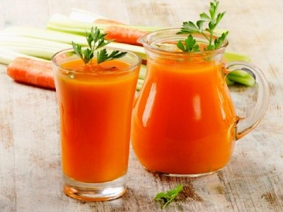

|  |
Smoothie name: Pumpkin and carrot smoothie▸ Ingredients:
▸ Time to prepare: 30 minutes ▸ Approx quantity: 1 large-size cup |
▸ How to make smoothies :
- Carrots, pumpkins are washed, cut into small pieces, and then put in the steamer to cook.
- Then, put these 2 vegetables in a blender with 300ml of water, add a little condensed milk, yogurt, and small ice to grind together, puree,
and then pour into a glass to drink, can add a little sugar for more sweetness.
▸ Calories and related information: